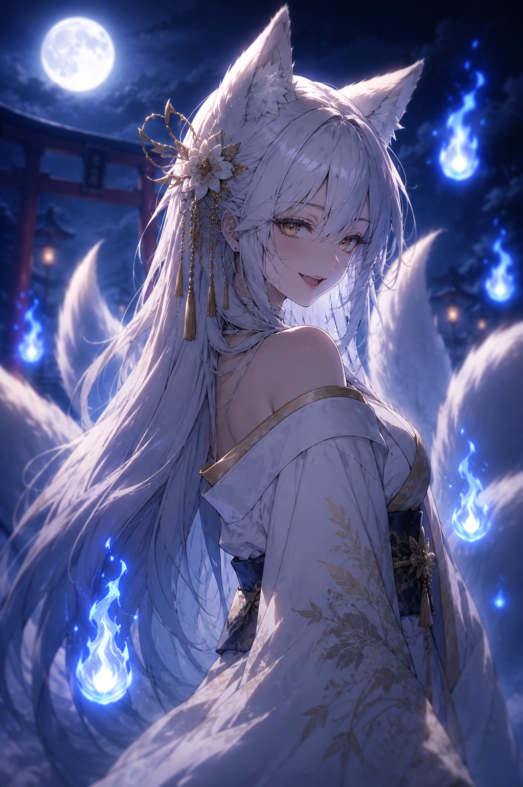
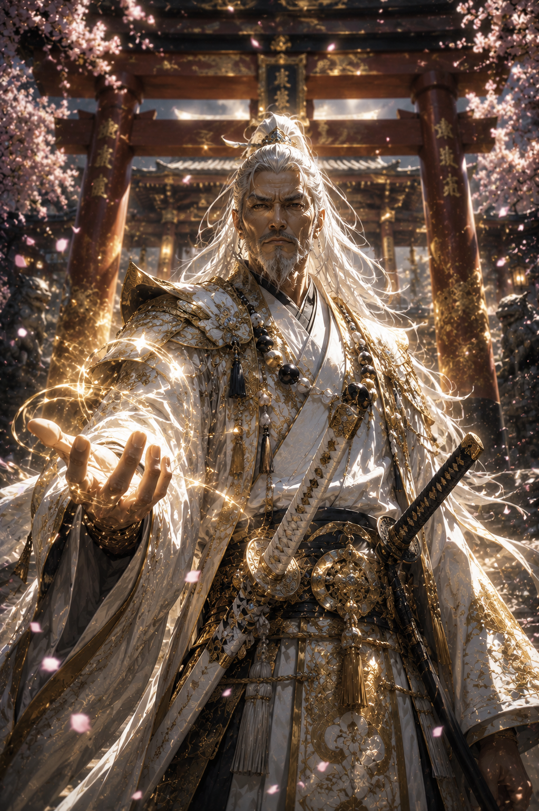
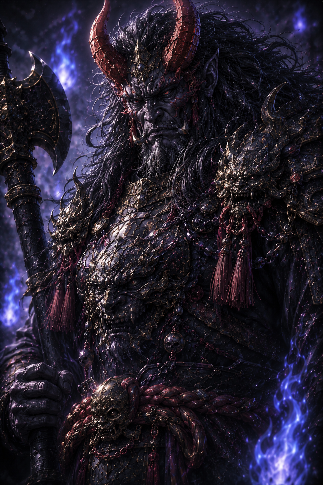

Characters / 登場人物
主要登場人物
Main Characters
主人公

影絵巻 Series I
鏡牙
Kyoga
「俺に居場所はない。だからこそ、どちらの世界も見える」
I belong to neither world. That is why I can see them both.
人間側

影絵巻 Series I
朱音
Akane
「神託は止めよと言った。でも私は、なぜ止めなければならないのかを知りたい」
The oracle said to stop it. But I need to know why.
妖怪側

影絵巻 Series I
玲
Rei
「ねえ鏡牙、私はあんたが必要なんだけどね」
Hey Kyoga — I need you. Whether you like it or not.
対立勢力 / Antagonists
人間側強硬派

影絵巻 Series I
蒼馬
Souma
「感情は剣を鈍らせる。使命だけが、人を人たらしめる」
Emotion dulls the blade. Only purpose makes us truly human.
妖怪側強硬派

影絵巻 Series I
冥牙
Meiga
「影を恐れるな。影がなければ、光もまた存在できぬのだ」
Do not fear the shadow. Without shadow, light itself cannot exist.